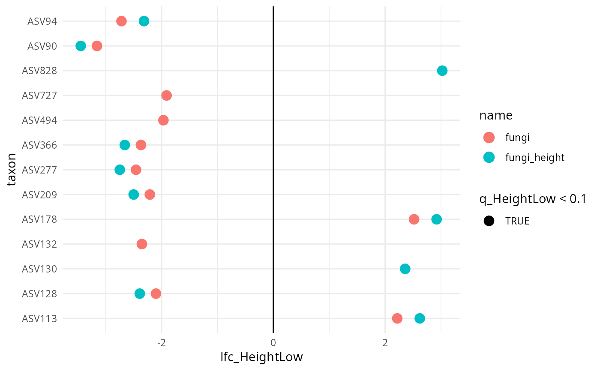
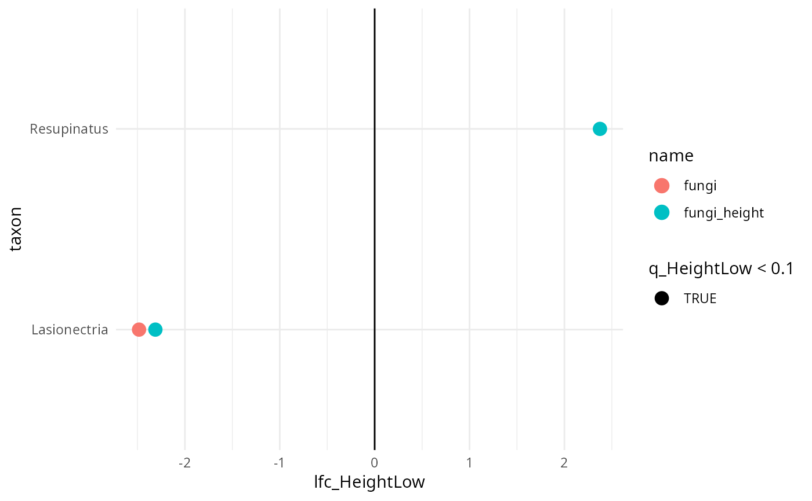

ANCOM-BC analysis on each phyloseq object in a list_phyloseq
Source:R/analysis_lpq.R
ancombc_lpq.RdPerforms ANCOM-BC differential abundance analysis using
MiscMetabar::ancombc_pq() on each phyloseq object in a list_phyloseq
and returns a combined result table.
Arguments
- x
(required) A list_phyloseq object.
- fact
(character, required) The name of a column in
sample_datato use as the grouping factor. Must be present in all phyloseq objects.- levels_fact
(character vector, default NULL) Levels of the factor to include. If NULL, all levels are used.
- tax_level
(character, default "Class") Taxonomic level for agglomeration before analysis.
- verbose
(logical, default TRUE) If TRUE, print progress messages.
- ...
Additional arguments passed to
MiscMetabar::ancombc_pq().
Value
A tibble with the combined ANCOM-BC results from all phyloseq
objects. Contains the $res data frame from each ANCOM-BC run, with
an additional name column identifying the source phyloseq object.
Details
This function requires that the list_phyloseq type is NOT
SEPARATE_ANALYSIS, as the factor must be common across all phyloseq
objects.
When no common taxa exist across the phyloseq objects, taxa names are suffixed with the phyloseq object name to make them distinguishable.
Examples
data_fungi_high <- multiply_counts_pq(data_fungi, "Height", "High", 2)
#> Modified 710 taxa in 41 matched samples
lpq <- list_phyloseq(
list(
fungi = data_fungi,
fungi_height = data_fungi_high
)
)
#> ℹ Building summary table for 2 phyloseq objects...
#> ℹ Computing comparison characteristics...
#> ℹ Checking sample and taxa overlap...
#> ℹ Detected comparison type: REPRODUCIBILITY
#> ℹ 185 common samples, 1420 common taxa
#> ✔ list_phyloseq created (REPRODUCIBILITY)
results <- ancombc_lpq(lpq, fact = "Height")
#> Running ANCOM-BC on 2 phyloseq objects
#> Factor: Height | Tax level:
#> → Processing: fungi
#> Checking the input data type ...
#> The input data is of type: TreeSummarizedExperiment
#> PASS
#> Checking the sample metadata ...
#> The specified variables in the formula: Height
#> The available variables in the sample metadata: X, Sample_names, Tree_name, Sample_id, Height, Diameter, Time
#> PASS
#> Checking other arguments ...
#> The number of groups of interest is: 3
#> The sample size per group is: High = 41, Low = 45, Middle = 45
#> PASS
#> Obtaining initial estimates ...
#> Estimating sample-specific biases ...
#> Loading required package: foreach
#>
#> Attaching package: ‘foreach’
#> The following objects are masked from ‘package:purrr’:
#>
#> accumulate, when
#> Loading required package: rngtools
#> ANCOM-BC2 primary results ...
#> Conducting sensitivity analysis for pseudo-count addition to 0s ...
#> For taxa that are significant but do not pass the sensitivity analysis,
#> they are marked in the 'passed_ss' column and will be treated as non-significant in the 'diff_robust' column.
#> For detailed instructions on performing sensitivity analysis, please refer to the package vignette.
#> → Processing: fungi_height
#> Checking the input data type ...
#> The input data is of type: TreeSummarizedExperiment
#> PASS
#> Checking the sample metadata ...
#> The specified variables in the formula: Height
#> The available variables in the sample metadata: X, Sample_names, Tree_name, Sample_id, Height, Diameter, Time
#> PASS
#> Checking other arguments ...
#> The number of groups of interest is: 3
#> The sample size per group is: High = 41, Low = 45, Middle = 45
#> PASS
#> Obtaining initial estimates ...
#> Estimating sample-specific biases ...
#> ANCOM-BC2 primary results ...
#> Conducting sensitivity analysis for pseudo-count addition to 0s ...
#> For taxa that are significant but do not pass the sensitivity analysis,
#> they are marked in the 'passed_ss' column and will be treated as non-significant in the 'diff_robust' column.
#> For detailed instructions on performing sensitivity analysis, please refer to the package vignette.
results
#> # A tibble: 336 × 26
#> name taxon `lfc_(Intercept)` lfc_HeightLow lfc_HeightMiddle `se_(Intercept)`
#> <chr> <chr> <dbl> <dbl> <dbl> <dbl>
#> 1 fungi ASV2 0.811 0.205 -0.894 0.471
#> 2 fungi ASV6 1.78 -1.98 -1.49 0.359
#> 3 fungi ASV7 0.645 -1.27 -0.840 0.357
#> 4 fungi ASV8 0.0677 -0.188 1.36 0.501
#> 5 fungi ASV10 0.887 -1.51 -1.32 0.360
#> 6 fungi ASV12 0.0790 -0.121 -0.553 0.469
#> 7 fungi ASV13 -0.431 0.404 -0.0182 0.366
#> 8 fungi ASV18 0.238 -1.53 -0.555 0.320
#> 9 fungi ASV19 0.0601 1.86 0.691 0.313
#> 10 fungi ASV24 -1.84 2.74 -0.198 0.341
#> # ℹ 326 more rows
#> # ℹ 20 more variables: se_HeightLow <dbl>, se_HeightMiddle <dbl>,
#> # `W_(Intercept)` <dbl>, W_HeightLow <dbl>, W_HeightMiddle <dbl>,
#> # `p_(Intercept)` <dbl>, p_HeightLow <dbl>, p_HeightMiddle <dbl>,
#> # `q_(Intercept)` <dbl>, q_HeightLow <dbl>, q_HeightMiddle <dbl>,
#> # `diff_(Intercept)` <lgl>, diff_HeightLow <lgl>, diff_HeightMiddle <lgl>,
#> # `passed_ss_(Intercept)` <lgl>, passed_ss_HeightLow <lgl>, …
results |>
filter(diff_HeightLow) |>
ggplot(aes(y = taxon, x = lfc_HeightLow, color = name, shape = q_HeightLow < 0.1)) +
geom_point(size = 4) +
geom_vline(xintercept = 0) +
theme_minimal()

results_Genus <- ancombc_lpq(lpq, fact = "Height", tax_level = "Genus")
#> Running ANCOM-BC on 2 phyloseq objects
#> Factor: Height | Tax level: Genus
#> → Processing: fungi
#> Checking the input data type ...
#> The input data is of type: TreeSummarizedExperiment
#> PASS
#> Checking the sample metadata ...
#> The specified variables in the formula: Height
#> The available variables in the sample metadata: X, Sample_names, Tree_name, Sample_id, Height, Diameter, Time
#> PASS
#> Checking other arguments ...
#> The number of groups of interest is: 3
#> The sample size per group is: High = 41, Low = 45, Middle = 45
#> PASS
#> Obtaining initial estimates ...
#> Estimating sample-specific biases ...
#> ANCOM-BC2 primary results ...
#> Conducting sensitivity analysis for pseudo-count addition to 0s ...
#> For taxa that are significant but do not pass the sensitivity analysis,
#> they are marked in the 'passed_ss' column and will be treated as non-significant in the 'diff_robust' column.
#> For detailed instructions on performing sensitivity analysis, please refer to the package vignette.
#> → Processing: fungi_height
#> Checking the input data type ...
#> The input data is of type: TreeSummarizedExperiment
#> PASS
#> Checking the sample metadata ...
#> The specified variables in the formula: Height
#> The available variables in the sample metadata: X, Sample_names, Tree_name, Sample_id, Height, Diameter, Time
#> PASS
#> Checking other arguments ...
#> The number of groups of interest is: 3
#> The sample size per group is: High = 41, Low = 45, Middle = 45
#> PASS
#> Obtaining initial estimates ...
#> Estimating sample-specific biases ...
#> ANCOM-BC2 primary results ...
#> Conducting sensitivity analysis for pseudo-count addition to 0s ...
#> For taxa that are significant but do not pass the sensitivity analysis,
#> they are marked in the 'passed_ss' column and will be treated as non-significant in the 'diff_robust' column.
#> For detailed instructions on performing sensitivity analysis, please refer to the package vignette.
results_Genus |>
filter(diff_HeightLow) |>
ggplot(aes(y = taxon, x = lfc_HeightLow, color = name, shape = q_HeightLow < 0.1)) +
geom_point(size = 4) +
geom_vline(xintercept = 0) +
theme_minimal()
